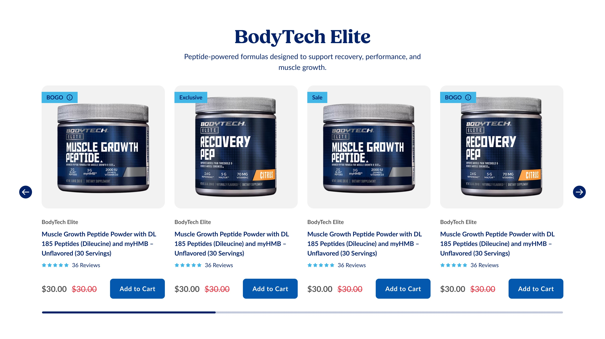
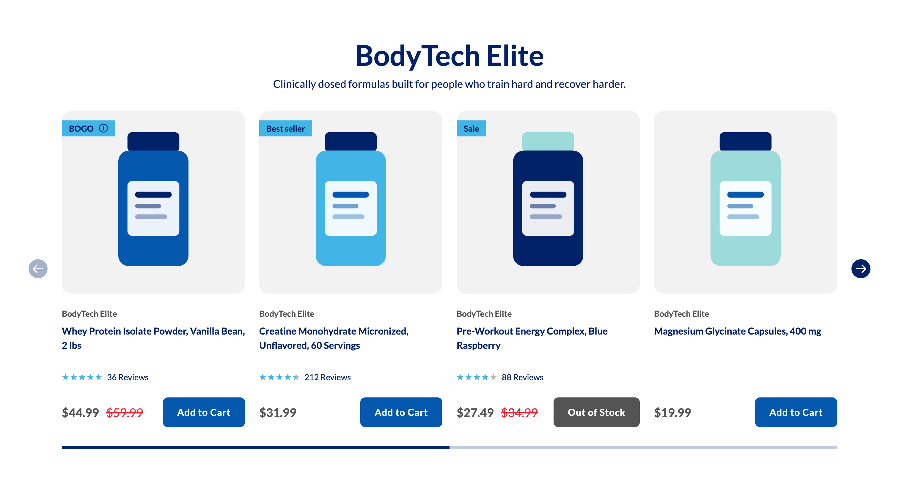
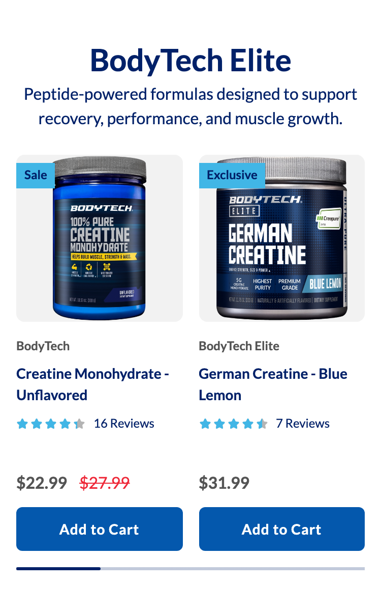
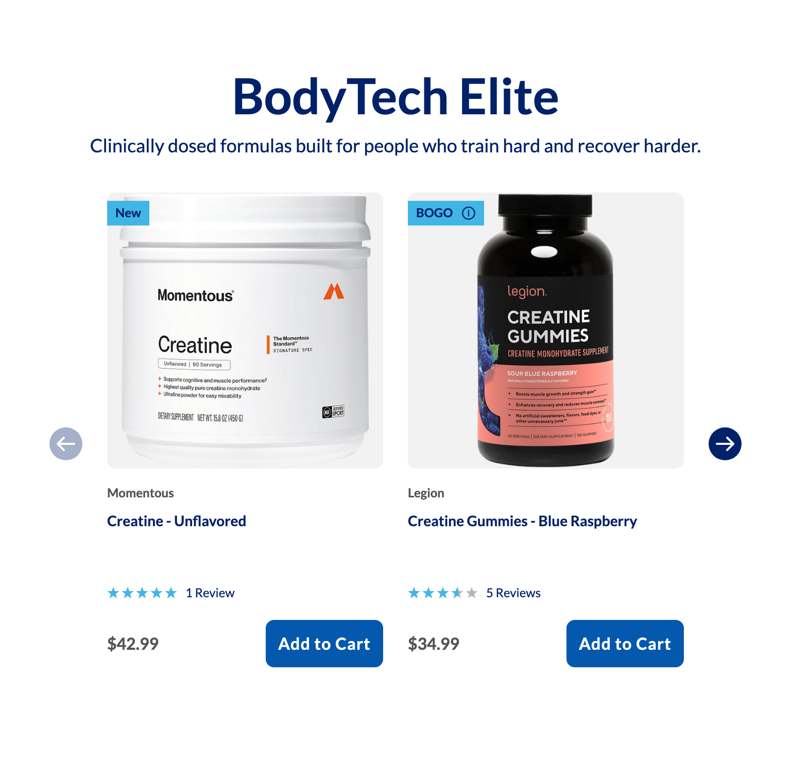
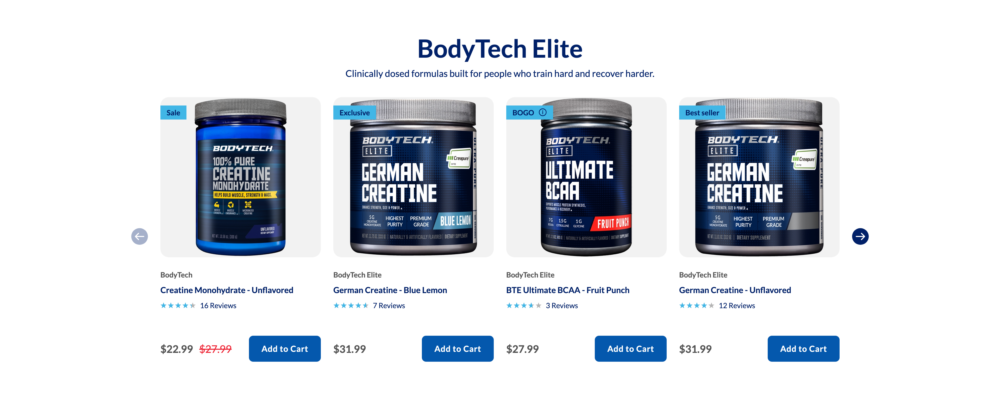

Platter component
Product Carousel
The client's spec, reproduced verbatim in substance from the Phase-1 archive of Confluence page 896532492. Where our implementation deviates it is recorded under Deviations, not by editing the spec. Status on the source page at transcription time was INTERNAL REVIEW.
Spec: https://getplatter.atlassian.net/wiki/spaces/TVS/pages/896532492/FSD+Product+Carousel
02 — Screenshots
How it renders
Wipe the handle across the design to find where the build drifts from it. The Figma frame and the capture are exported at the same width, so anything that moves under the handle is a real difference. Every width is below as a plain capture.





03 — Fields
What a merchandiser fills in
Generated from _schema.ts, in the order Amplience shows them.
| Field | Type | Constraints | Description | |
|---|---|---|---|---|
headingHeading |
string | required | max 90 min 1 |
The headline above the row, usually the brand or category the products share. It sits on one centred line at 48px in a 640px column, so anything past about 20 characters wraps to a second line and pushes the cards down — that is a layout choice, not an error. Wrap words in _underscores_ for italic and **double asterisks** for bold. Write ~12~ for subscript; a registered mark (®) is raised automatically, and a plain asterisk is never formatting. |
headingLevelHeading level |
string | h1 · h2 · h3default "h2" |
Choose h1 only if this module is the first thing on the page and no other h1 exists. Otherwise leave it as h2 — two h1s on one page hurts SEO. Choose h3 when the module sits underneath a section that already has an h2, so the page's heading order stays unbroken. This changes nothing you can see: the size is set separately below. | |
headingSizeHeading size (desktop / mobile) |
string | 64px / 38px · 56px / 34px · 48px / 30px · 36px / 24px · 28px / 20px · 20px / 16pxdefault "48px / 30px" |
A fixed pair from the TVS type scale — the first size applies from tablet up, the second on phones. | |
headingFontHeading font |
string | Lato · corisanderegular · Fieldsdefault "Lato" |
Lato is the site's heading typeface and the safe choice. Corisande is its body typeface — pick it when the module needs to sit closer to surrounding editorial copy. Fields is the serif used in the newer designs; it is not yet installed on vitaminshoppe.com, so until it is, headings set in Fields fall back to Georgia and will not look identical on every device. | |
bodyDescription |
string | max 220 | One or two sentences under the headline, centred. Wraps rather than truncating, which pushes the cards down — keep it to a line or two. Leave empty to hide it. | |
skusProducts (SKU ids) |
array | required | The products this module shows, in the order you list them. Enter TVS SKU ids exactly as they appear on the product page, e.g. VS-4612. Everything on each card — image, brand, name, price, rating — is pulled live from the product record, so there is nothing else to fill in here. A SKU that no longer exists is skipped without a message, so open the page after saving if you see fewer cards than you added. | |
showRatingShow star ratings |
boolean | default true |
Shows the star rating and review count on every card in this module. Switch off for a range where reviews are thin or missing — a card with no rating leaves a gap the others do not have, so it reads better with ratings off for the whole module than on for some of it. | |
cardOverridesCard overrides |
array | Optional, per-SKU decoration. Each row names one SKU from the list above and replaces that card's automatic badge, the note behind the badge's info glyph, or both. Cards without a row here are untouched, and a row for a SKU that is not in the list does nothing. | ||
sectionIdSection ID |
string | max 50^[a-z][a-z0-9-]*$ |
A name for this specific module, used for two things. The Sticky Anchor Navigation links to a module by this name, so a carousel that should appear in that bar needs one. A link anywhere on the site can also jump straight here by ending the URL with # and this name, e.g. #bodytech-elite. Use lowercase letters, numbers and hyphens, start with a letter, and make it unique on the page — two modules sharing an ID will break both the jump link and the nav bar. |
04 — Sample content
A filled-in example
From _content.json. This is what the screenshots above are rendering.
{
"heading": "BodyTech Elite",
"headingLevel": "h2",
"headingSize": "48px / 30px",
"headingFont": "Lato",
"body": "Peptide-powered formulas designed to support recovery, performance, and muscle growth.",
"skus": [
"VS-0397",
"VS-8532",
"VS-8521",
"VS-8531",
"VS-2668",
"VS-2255",
"TPL0006",
"KGM1011"
],
"showRating": true,
"cardOverrides": [
{
"sku": "VS-8531",
"badge": "Best seller"
},
{
"sku": "VS-2668",
"badge": "New"
},
{
"sku": "VS-2255",
"badge": "Bundle & Save",
"tooltip": "Save 20% when you buy any two BodyTech mass gainers. Offer valid through 08/23/2026. Discount applies at checkout and cannot be combined with other promotions. Excludes clearance items."
}
],
"sectionId": "bodytech-elite"
}05 — Design reference
Design reference
The section frames are 18227:402823 (desktop, 1512) and 18227:412530 (mobile, 375). The card is 18227:402841; its master lives in an external library, so no variant axes are readable in this file.
| Concern | Desktop | Mobile |
|---|---|---|
| Section padding | 48 inline, 64 block | 16 inline, 40 block |
| Background | #ffffff, flat | #ffffff |
| Header block | centred, 640 fixed | centred, 343 |
| Heading | 48px, 700, line-height 1.2, #012169 | 30px |
| Description | 18px, 400, line-height 1.5, #012169 | 16px |
| Heading to description | 6 | 4 |
| Header to track | 32 | 24 |
| Cards in view | 4 at 308 wide, gap 24 | 2 at 163.5, gap 16 |
| Arrows | 32 circle, #012169, 24 white glyph, 56 gutters | none |
| Track to indicator | 32 | 16 |
| Indicator | 1302 by 5, three equal segments, active #012169 | 343 by 3, rounded, thumb 70.3, rail rgba(1,33,105,.24) |
Card interior, measured on the desktop frame. Vertical gap 24 throughout.
| Element | Value |
|---|---|
| Media | 308 square, radius 16, plate #f2f2f2, image contained |
| Badge | overlaid 16 from the top, flush left, square corners, padding 4 and 12, #41b6e6 on #012169, 14px 700, optional 16px info glyph |
| Brand | 14px, 700, line-height 1.4, #545454 |
| Name | 16px, 700, line-height 1.5, #012169, three lines at 72 |
| Rating | five 12px stars, gap 2, then review count at 14px 400 #012169 |
| Price | 20px, 700, #545454 |
| Compare price | 20px, 400, #ee2737, struck through |
| Add to Cart | 138 by 50, radius 8, padding 16 and 24, #0458ad, 16px 700 white, tracking 0.64px |
The design draws the badge and its info glyph as one unit. Measured against all 45 SKUs on the creatine collection page on 2026-08-10, the live tile carries two independent slots instead: burstMessage as the ribbon — Sale (15), Exclusive (4), BOGO (1), New (1), null (24), so New is a fifth value the original transcription missed — and promoMessage as plain text beside it, present on 42 of the 45. The glyph belongs to the second slot and does not track BOGO: it follows tooltipMessage, and of the four SKUs carrying one, three are Sale.
The master also carries a variant line, two swatch pickers, a select and a toggle, all hidden in every instance and therefore unspecified.
06 — User requirement
User requirement
- User can swipe/arrow through cards.
- User can click Add to Cart from product card, which triggers add to cart action and open a success message 'added to cart' (current live site behavior)
07 — Admin requirement
Admin requirement
| Content Type | Functional Requirement | Asset/Copy Requirement | Responsive & Content Behavior |
|---|---|---|---|
| Carousel Display | Desktop: When there is more than 4 SKUs added, it becomes carousel. Mobile: When there is more than 2 SKUs added, it becomes carousel | - | Number of visible cards per view stays the same as per design at narrower breakpoints, but the size of card decreases in certain viewpoint. |
| Carousel Navigation Arrows (Desktop Only) | Clicking the arrow moves 4 products at a time. Arrow is disabled when there are no more products to display in that direction -- this is not an infinite/looping scroll. | ||
| Heading (Required) | Admin can edit the heading | Copy: <20 character | |
| Description (Optional) | Admin can add/edit the description | Wraps into multiple lines when the copy is longer than 1 line. | |
| Product Assignment (Required) | Admin can assign products by selecting multiple SKU. Minimum 2, maximum 10. | - | - |
| Product Card | All product data is pulled dynamically from selected SKU. Image: featured main image. Brand name. Product title (including variant info). Price (compare at + sale price). Rating — admin can decide to display the rating or not for each section. | ||
| Anchor Target (Required) | Each carousel instance registers as an anchor target for the Sticky Anchor Navigation. | - | - |
08 — Other requirements
Other requirements
- Follows FSD: Global SEO Rule, https://getplatter.atlassian.net/wiki/spaces/TVS/pages/889683969
- Analytics: Component supports automated impression tracking (viewport entry) and click tracking via the standard
raiseEventhandler
09 — Open comments
Open comments
Star and info-glyph colour — unanswered 2026-08-07
unanswered 2026-08-07
Both render as exported SVG assets in Figma, so their fills are not readable in the file. We use light blue #41b6e6 for a filled star and #b4b4b4 for an empty one, because #41b6e6 is the one token in the card's set with no other consumer and it matches how the artwork looks. Please confirm, and confirm the empty-star treatment, which the design never shows because all four sample cards are five-star.
Heading typeface — unanswered 2026-08-07
unanswered 2026-08-07
The design sets the heading in Fields Bold. Fields is not one of the typefaces loaded on vitaminshoppe.com today, so a heading set in it falls back to a system serif. The field offers Fields as an option and defaults to Lato. Is Fields being added to the site's font stack, and on what timeline?
Mobile card interior — resolved 2026-08-07
resolved 2026-08-07
Raised because the hidden alternate rows on the desktop frame carry no measurements, so the mobile card looked unspecified. It is not: the mobile frame 18227:412530 holds the real values, and comparing our captures against it gave title 14px, price 16px, review count 12px, badge label 12px with 8px of horizontal padding, media radius 8px, badge inset 8px and 14px of block padding on the button. The card now steps down to all of them. Only two things there are still ours — the stacked buy row and the brand line, both recorded under Deviations.
Brand line on mobile — unanswered 2026-08-07
unanswered 2026-08-07
The mobile design has no brand line: its card goes image, title, reviews, price, button. The Admin requirement above lists brand name among the data every product card pulls, and it does not scope that to desktop. We kept the brand line at 12px rather than drop merchandising data the spec asks for. Should it come off on phones?
Which rating field to render — unanswered 2026-08-07
unanswered 2026-08-07
docs/tvs-api-reference.md records that avgOverallRating and avgDecimalRating are labelled "actual" and "rounded" but that the sample data contradicts the labels in both directions. We render avgDecimalRating. This needs checking against live data before launch.
Add-to-cart confirmation — answered 2026-08-17
answered 2026-08-17
The spec asks for the current live-site 'added to cart' message. That message is the modal in <vshoppe-add-to-cart-overlay-upgrade> → #upgradeMiniModal → .redesignAddToCartDialog, an Angular component the main storefront mounts directly under <app-root>. It does not exist on a landing page. Measured 2026-08-17: on /c/protein-fitness/performance-supplements/creatine the component is present, and on qa1 /lp/platter-template-1-dev <app-root> has exactly one child, <app-tvs-lp-component>. So no call we can make — including cart.addToCart — has anything to open, and the legacy raiseEvent path would not change that. TVS hit the same wall in their own LP component: CMSProductATC carries a hand-rolled lp-atc-modal with its own openAtcModal().
We deliberately do not build a replacement modal, because a second confirmation UI would then collide with the real one the moment TVS mounts it. Confirmation stays on the button, which now holds its Added state for the life of the page instead of reverting — see Deviations. Asked of TVS 2026-08-17: mount the overlay on the LP route, or expose a method on _vsiMicroFE.cart that opens it.
Review count as a link — unanswered 2026-08-07
unanswered 2026-08-07
Figma names the review-count node "link" but the product API exposes no reviews URL distinct from the PDP. It currently renders as plain text. Should it link to the PDP, or to an anchor within it?
10 — Deviations
Deviations
Products are fetched with getProductDetailsBulk, not getProductList
Built
getProductList is documented as the lightest endpoint and the one intended for cards and tiles, but it returns no compare-at price, no badge fields and no skuId — its add-to-cart identifier is jdaSkId, a name that means the JDA id on a different endpoint. The spec requires a compare-at price and the design requires a badge, so the section calls getProductDetailsBulk. It is still one request for the whole carousel.
The heading defaults to Lato although the design draws Fields
Built
See the open comment above. Defaulting to a typeface that is not installed would ship a system-serif fallback as the design's own look; Lato is what actually renders. A merchandiser can select Fields today and it will start rendering correctly the moment the font ships.
Heading level, size and typeface are merchandiser settings
Built
The spec lists only "Admin can edit the heading". These three fields exist on every other Platter section, and heading level in particular is what keeps the page's heading order intact when a carousel sits under another module. Adding them keeps one vocabulary across the CMS rather than making this form the exception.
Section ID is optional, not required
Built
The spec marks Anchor Target as required. sectionId is optional in every other section, and the same field being required in one form and optional in another is the inconsistency the shared vocabulary exists to prevent. We read "Required" as labelling the capability rather than the merchandiser input. The field's own description tells a merchandiser that the Sticky Anchor Navigation needs it.
The desktop indicator is paged, the mobile one is proportional
Built
The design draws three equal segments on desktop and a proportional thumb on mobile. These are not the same control: three segments is a page count, which is correct because desktop advances four cards at a time, while the mobile thumb is sized by the visible fraction because mobile scrolls freely. Both are rendered, one per breakpoint, from the same scroll state. The desktop segment count follows the number of pages rather than being fixed at three.
The compare price is gated on the sale flag
Built
The API returns products whose before and after prices are identical with onSale false. Rendering the strikethrough on a value comparison alone would show a fake discount, so it requires both onSale and a genuinely higher list price.
Four cards start at 1280, not 768
Corrected 2026-08-11
The Responsive column asks for the visible card count to hold at narrower breakpoints while the card shrinks. Taken literally at 768 that leaves 122px per card — narrower than the add-to-cart button alone — so the row rendered 3.03 cards instead of 4, with the button wrapped onto three lines and the prices stacked.
Four-up was first put at 1024, which was still too early and is the correction recorded here. A four-up card is (viewport - 265) / 4, measured across five widths: 1024 gives 190px and 1280 gives 250px, both under the 300px the drawn buy row needs, so every ordinary laptop rendered a card whose compare price had wrapped under its current price. Two cards therefore hold to 1279, which gives a 507px card at its widest and 268px at 768, and four start at 1280.
sections/CLAUDE.md § Breakpoint prescribes this shape: Figma tokenises its desktop frames at 1200 and above and its mobile frames at 768 and below, so the band between is undrawn in every design we have, and where the arithmetic does not survive it the flip belongs at the next breakpoint up.
Separately, the card sizes itself from its OWN width rather than the viewport, so the same block is reusable at a width its consumer chooses. It now has three buy-row bands rather than two — see the deviation below.
The brand line is kept on mobile, and the buy row has three bands
Corrected 2026-08-11
Two departures from the mobile frame, both in the card. The design drops the brand line on phones; we keep it, sized at 12px, because the Admin requirement lists brand name as card data without scoping it to a breakpoint — see the open comment.
And the design's price row and button share a line, which cannot hold at 163.5px wide: a 138px button beside two prices overflows, so below 244px of card the prices sit above a full-width button. Between 244 and 299 the row is inline but stepped down — 16px prices at an 8px gap, and a button padded 12 rather than 24 — because the drawn row measures 126 of prices, 12 inside them, 24 to the button and the button's own 138, which is 300px exactly. The prices never wrap: left to wrap they were the flex item that gave way, which read as a stacked card that had forgotten to stack.
The offer text is hidden and its detail moved onto the badge glyph
Built
The design and the live tile both put promoMessage as a text line under the review count. It is hidden for now at the client's request, because 36 of the 45 SKUs on the creatine collection carry nothing but Auto-Delivery Save 15% and auto-delivery is not being merchandised in these modules.
The rest of that copy is not dropped. Anything that is not an auto-delivery message — Buy One, Get One 50% Off, 25% Off - See Sale Price In Cart, Ships Free!, Only at the Vitamin Shoppe — is joined to the tooltipMessage legal detail and shown in the panel behind the info glyph, which moves into the badge. That is where the design draws it: § Design reference records the badge and its glyph as one unit with an optional 16px glyph. A SKU with offer copy and no badge renders the glyph alone in that slot, so its position never moves.
The card's column gap is the drawn 24
Corrected 2026-08-11
§ Design reference records "vertical gap 24 throughout" from the desktop frame, and the card steps from 16 to 24 once it is at least 280px wide.
It was held at 16 for a time, on the reasoning that the drawn 24 surrounded a promo line the card no longer renders and that the column read loose without it. That reasoning does not survive being stated plainly: hiding the promo line was the client's request, and re-tightening the spacing around its absence was ours. Restored on Felix's instruction 2026-08-11 — where the design draws a number and nothing asked us to change it, the design wins.
The product name hugs its content rather than reserving three lines
Built
§ Design reference records the name as "three lines at 72", and the card reserved that height at every card — 63px narrow, 72px wide — so the rating, price and button rows lined up across cards whose names run to different lengths.
The reserve is removed, on Felix's instruction 2026-08-11: names run to one or two lines on most real SKUs, so the third line was dead space under every short name. The cost is real and is the reason it was built that way. Prices and buttons still align, because they are pushed down by margin-top: auto; the rating row now sits wherever each name leaves it, so a two-line name puts its stars a line lower than its neighbours. The skeleton's name placeholder is therefore nominal rather than exact, and a card shortens slightly when a short name lands.
The card is one link, and the brand line is no longer one
Built
The design draws no link affordances, so which elements are anchors was ours to decide. It was four per card — image, brand, name, and the add-to-cart button — which put five tab stops on every card and 40 on a full carousel.
The card is now a single anchor: the product name carries an ::after inset over the whole card, so the entire card is one hit area and one tab stop. The image anchor is gone and the brand line is a <span>, which drops the brand page as a destination — a deliberate trade for the tab order. The add-to-cart and info-glyph buttons sit above the overlay on z-index rather than inside the anchor, because a <button> inside an <a> is invalid and announces unreliably; no click handler cancels a navigation. The focus ring is drawn on the card rather than the anchor, since the card is what the anchor covers.
States absent from the design
Built
Figma draws no hover, focus, disabled, out-of-stock, loading or error state anywhere in this section. Accessibility is a delivery requirement, so the implementation adds a visible focus ring on every control, a disabled arrow at the ends of the track, a skeleton card while the request is in flight, a disabled Add to Cart labelled "Out of Stock" when isTemporaryOutOfStock is set, and a polite live region announcing the result of an add.
The Add to Cart button keeps its Added state for the life of the page
Corrected 2026-08-17
The button previously returned to "Add to Cart" two seconds after an add. On the live PLP the tile keeps reading "Added" indefinitely while its neighbours still offer "Add to Cart", and matching that matters more here than on the storefront: the modal that carries the storefront confirmation is not mounted on the landing page (see Open comments), so this button is the only trace an add leaves. Both added and error are now terminal — error stays on "Try again", which is the retry affordance rather than a message that should expire.
The button stays enabled in the added state, so a shopper wanting a second unit is never trapped. The cost is that a repeat add produces no new confirmation beyond the label passing through "Adding…" and the live region re-announcing; the live site covers that case with the modal counting "2 items added to cart", and we will inherit it if TVS mounts the overlay on the LP route.
A carousel with no resolvable products hides itself
Built
A SKU that no longer exists is dropped, which the spec implies but does not state. If every SKU fails, or the product API is unreachable, the section removes itself rather than leaving a heading over an empty row. The failure is logged to the console.
Impression tracking is not implemented
Not built
"Other requirements" asks for automated impression tracking on viewport entry. Click tracking ships, using the shared raiseEvent('ItemClick', …) payload with moduleTitle. Impression tracking has no agreed event name or payload for any Platter module yet — it is still open on the slim hero's FSD — so it is deliberately left out rather than invented here.
The info glyph is a control, unlike the live site
Built
TVS render the glyph as <span class="repos__disclamer-tooltip"> — their typo — with no button, a or role="button" ancestor, measured on LEG-15353 on 2026-08-10. On the live site the offer terms therefore cannot be reached by keyboard and are not announced to a screen reader. Ours is a real <button> carrying aria-expanded and aria-controls, and the panel announces itself when it opens. Accessibility is a delivery requirement, so the deviation is deliberate.
The panel is also moved out of the section with x-teleport, because the carousel track is overflow-x: auto and clips anything positioned inside a card. It closes on Escape, on a click outside, and on any scroll or swipe.